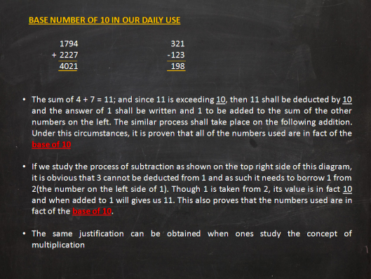
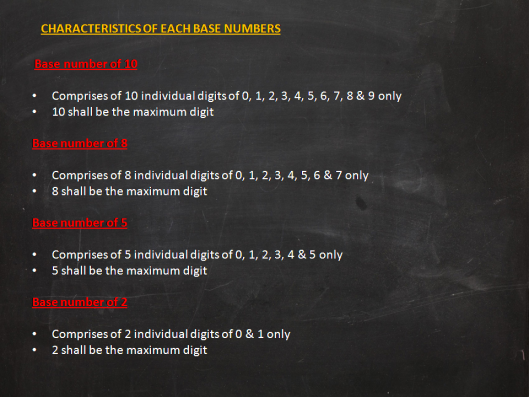
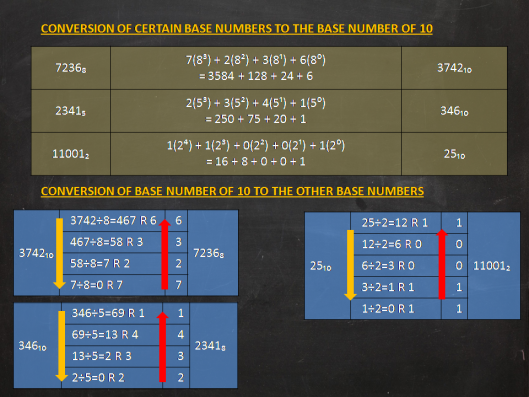

The whole numbers that we used in daily life is actually from the number base 10. Its derived from 10 different DIGITS
which is 0,1,2,3,4,5,6,7,8,9.

Below is the characteristics of each base number:

Below shows how to convert numbers from one base to another base:

« Back
Home
Next »